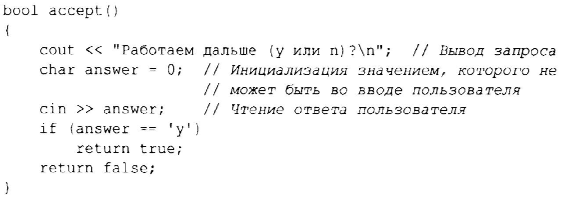
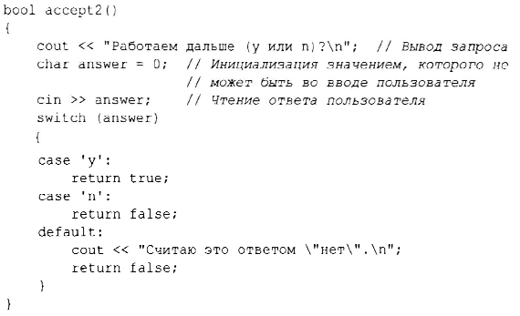
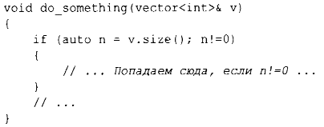
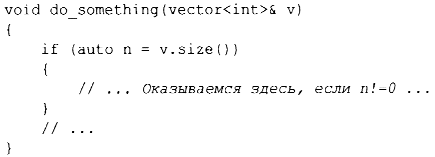

⇐1.7.1. Нулевой указатель 1.9. Отображение на аппаратные средства⇒
1.8. Проверки
С++ предоставляет обычный набор операторов для выражения выбора и циклов, таких как инструкции if, switch, while и for. Например, вот простая функция, которая выполняет запрос ввода пользователя и возвращает логическое значение, указывающее его ответ:
Оператору вывода « соответствует оператор » для ввода; cin - переменная стандартного потока ввода (глава 1 О, "Ввод и вывод"). Тип правого операнда оператора » определяет, какой вход принимается, а сам правый операнд является целевым объектом операции ввода, принимающим вводимую информацию. Символ \n в конце выводимой строки является символом новой строки (§ 1.2.1 ).
Обратите внимание, что определение answer появляется там, где оно необходимо (а не до того). Объявление может находиться везде, где может находиться инструкция языка.
Пример можно было бы улучшить, если учесть ответ n (для "нет"):
Инструкция swi tch сравнивает значение с набором констант. Эти константы, именуемые метками case, должны быть различными, а если проверяемое значение не равно ни одной из них, выбирается метка defaul t. Если проверяемое значение не равно ни одной из меток case, а метка defaul t отсутствует, не выполняются никакие действия.
Мы не обязаны выходить из саsе-метки с помощью оператора return для выхода из функции, содержащей инструкцию switch. Зачастую мы хотим продолжать работу, выполняя инструкцию, следующую за инструкцией switch. Это можно сделать, применив инструкцию break. В качестве примера рассмотрим примитивный анализатор тривиальных команд видеоигры:

Так же, как и инструкция for (§1.7), инструкция if может вводить переменную и тестировать ее. Например:
Здесь целое значение n определяется для использования внутри инструкции if, инициализируется значением v.size() и тут же, после точки с запятой, проверяется условие n !=О. Имя, объявленное в условии, находится в области видимости обеих ветвей инструкции if.
Как и для инструкции for, цель объявления имени в условии инструкции i f заключается в том, чтобы ограничить область видимости переменной, улучшить читаемость и минимизировать ошибки.
Наиболее распространенный случай - проверка переменной на равенство нулю (или nullptr). Для этого просто удалите явное упоминание о сравнении. Например:
Предпочтительно использование по возможности этой более краткой и простой формы записи.